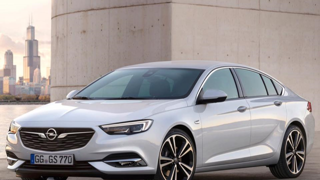

Otomobil markalarının ilginç hikayeleri ve gelişim süreçleri oluyor. Bu hikayeler arasında en ilgi çekici olanlardan birisi de Opel’e ait. Almanya’da küçük bir kasabadaki ahırda, 1862 yılında Adam Opel tarafından kurulan marka, ilk olarak dikiş makinesi ve bisiklet üretmiş ama zaman ilerledikçe otomobil üretmeye de başlamış. 100 yılı geçen tarihinde el değiştirmenin de dahil olduğu birçok badireye rağmen marka, hala daha dünyanın en başarılı otomobil üreticileri arasında gösteriliyor.
1900’lü yılların başından itibaren farklı modeller ve iş birlikleri ile hızlıca yükselen Opel, 1911’de fabrikasında çıkan yangın nedeniyle önemli bir maddi kayıp yaşamış. Peşi sıra gelen ekonomik sorunlar ise olayların tuzu biberi olmuş ve en sonunda dünyanın en büyük üreticilerinden olan ABD merkezli General Motors tarafından Opel satın alınmış. Uzun yıllar Opel’i yöneten General Motors da 2017 yılında yaşadığı ekonomik sorunlar nedeniyle markayı, Peugeot-Citroen Grubu’na sattı.
Opel markasının ürettiği otomobiller incelendiğindeyse tarihsel olarak iki farklı strateji izlendiğini söyleyebiliriz. 1980’li yıllara kadar üretilen modeller ile 1980’li yıllardan sonra üretilen modellerin isimlerine bakıldığı zaman, bu durum daha açık olarak görülüyor. 1930’lu yıllardan 1980’li yıllara kadar üretilen; Kadett, Kapitan, Senator ve Diplomat gibi isimlerin askeri ve daha erkeksi olduğu rahatlıkla söylenebilir. Markanın 1980’li yıllardan günümüze kadar ürettiği araçlar için ise Latince kökenli yıldız ve şelale gibi daha nötr isimler kullanmaya çalıştığı görülüyor.
Markanın iletişim stratejisinde gerçekleştirdiği bir başka önemli değişiklik ise sloganında görülüyor. Eskiden kullandığı ve keşif çağrısı yapan “Discover Opel” sloganı ile milyonlarca araç satan marka, günümüzde “otomobilleri yaşıyoruz” anlamına gelen “Wir Leben Autos” sloganını kullanıyor.
